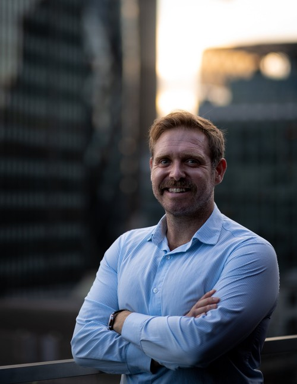

Sam Wrighton
Operational leader and business development specialist with seven years of progressive experience across research, strategy, and C-suite management. Currently COO of an international development organisation, leading operations, logistics, compliance, HR, and business development functions. Experienced working in government and security-sensitive environments.
Background
About me
I have built my career at the intersection of research, strategy, and operational delivery. After completing an ESRC-funded DPhil in International Relations at the University of Oxford (St Cross College), I moved into the private sector, progressing through research, business development, and senior leadership roles across three organisations in seven years.
My academic work focused on migration, geopolitics, and inter-state relations. My professional work has taken me into operational leadership and business development, where I focus on building and scaling infrastructure in resource-constrained environments. I have particular experience in restructuring teams and workflows to achieve more with less, including the practical integration of AI tools into day-to-day operations. I have worked in government and security-sensitive contexts throughout my career.
I am interested in how organisations can build resilient operational foundations during periods of rapid change, and I write about these topics below.
Expertise
What I bring
Operational Scaling
Building operational infrastructure for growing organisations. Consolidating leadership functions, designing repeatable systems, and making small teams perform like much larger ones.
Business Development
End-to-end bid management, public procurement, and framework agreements. A track record of doubling revenue and winning contracts with UN agencies, FCDO, EU institutions, and international NGOs.
AI-Enabled Operations
Practical integration of AI tools into operational workflows. Building bespoke internal software through AI-assisted development, eliminating manual processes, and reducing costs without reducing quality.
Compliance & Quality
ISO 9001 and ISO 27001 certification with zero non-conformances. Building documentation frameworks, quality assurance processes, and compliance systems from scratch.
International Expansion
Established European subsidiaries for two organisations, managing legal incorporation, financial systems, and organisational structure across jurisdictions.
Team Leadership
Managing teams of up to 24 people across research, business development, and operations. Recruitment, performance management, and building organisational culture in resource-constrained environments.
Beyond work
A bit more about me
I have visited 106 countries and counting. Travel has shaped how I think about organisations, systems, and the ways different cultures solve the same operational problems in completely different ways.
Away from work, I am a keen cricketer and sailor, and I spend my winters skiing whenever I can. I am a football season ticket holder and follow England rugby home and away. Sport has taught me more about leadership, resilience, and team dynamics than any management book.
Writing
Thinking and practice
What running five leadership functions as one person taught me
When three senior roles became vacant in quick succession, we had a choice: hire replacements or redesign how the work gets done. We chose the latter. Here is what I learned.
How I used AI to restructure a small company's operations
A practical account of which tools made a real difference, which were overhyped, and how to think about AI integration when you are resource-constrained.
Contact
Get in touch
Open to conversations about operational leadership, business development, and how organisations can build stronger internal systems. Whether you have a specific opportunity in mind or just want to connect, I would be glad to hear from you.
Your message goes directly to my inbox. I aim to respond within 48 hours.